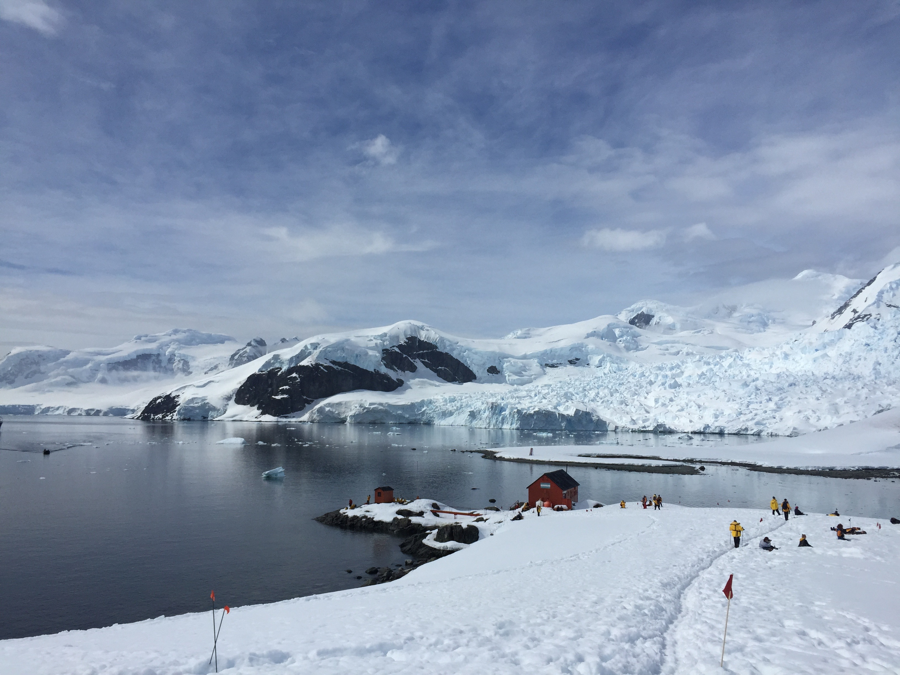

我的極地旅行
南極大陸
2015年12月一個人買了機票和南極的郵輪票，一人獨自坐飛機至阿根廷首都布宜 諾斯愛麗斯，再坐小飛機到阿根廷最南邊的烏斯懷雅城市，我登上了郵輪展開夢 幻已久的南極之旅。

北極海
2006年2月為了享受邊泡溫泉邊看極光(Northern Light)， 一人獨自坐飛機至阿拉斯加(Alaska)，再開車往北至接近北極圈的 Chena Hot Springs溫泉渡假村。

2015年12月一個人買了機票和南極的郵輪票，一人獨自坐飛機至阿根廷首都布宜 諾斯愛麗斯，再坐小飛機到阿根廷最南邊的烏斯懷雅城市，我登上了郵輪展開夢 幻已久的南極之旅。
2006年2月為了享受邊泡溫泉邊看極光(Northern Light)， 一人獨自坐飛機至阿拉斯加(Alaska)，再開車往北至接近北極圈的 Chena Hot Springs溫泉渡假村。